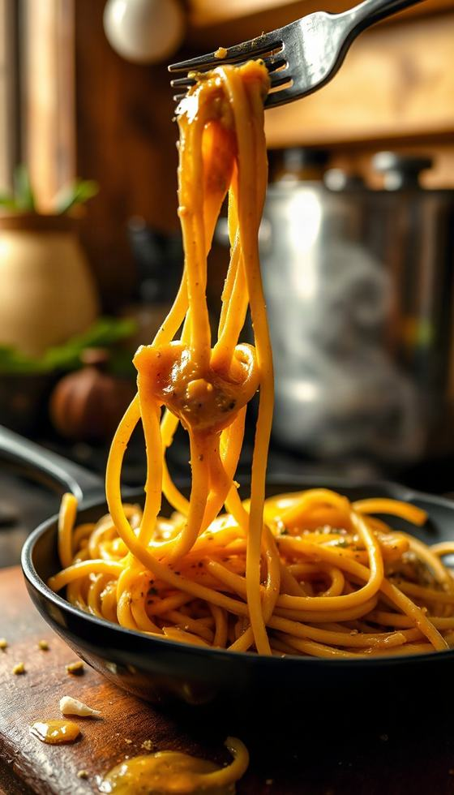
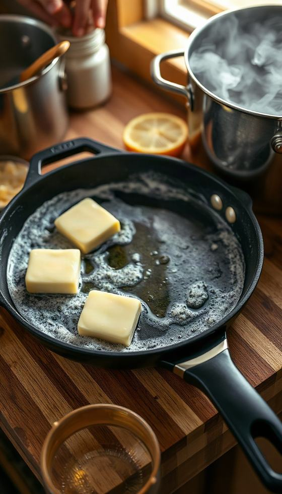
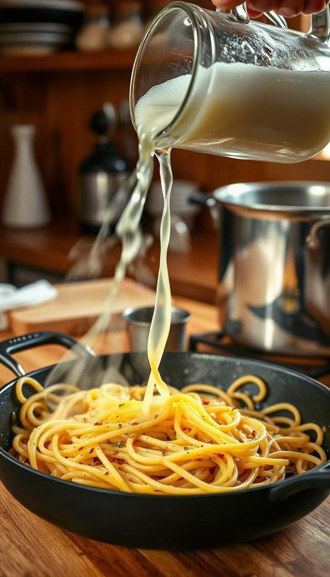

Budget Bite Club
Budget Bite ClubOne Box of Spaghetti, 3 Ways: Copycat Panda Express Chow Mein, Garlic Noodles and Aglio e Olio
$3.40 · 3 servings · 20 min
Copycat Panda Express chow mein, garlic noodles AND aglio e olio, all from one $1.20 box of spaghetti. Three dinners, $3.40 total, $1.13 a plate.





Ingredients
- 1 lb spaghetti
- 1 tablespoon kosher salt for the pasta water (pantry)
- 1 tablespoon neutral oil
- 2 cups thinly shredded green cabbage
- 2 tablespoons soy sauce
- 3 tablespoons butter
- 10 garlic cloves total (6 minced, 4 thinly sliced)
- 1 tablespoon oyster sauce
- 3 tablespoons olive oil
- 1/2 teaspoon red chili flakes
- 1 cup reserved pasta water
Steps
- Bring 4 quarts of water and 1 tablespoon of salt to a rolling boil in a large stock pot. Cook 1 lb spaghetti for 9 minutes, until just al dente. Reserve 1 cup of pasta water, drain, and divide the noodles into three portions.
- Chow mein: heat 1 tablespoon of oil in a 12-inch nonstick skillet over medium-high heat. Add 2 cups of shredded cabbage and cook 2 to 3 minutes until wilted with golden edges.
- Add one portion of spaghetti and 2 tablespoons of soy sauce. Toss with tongs for 2 minutes until the noodles are glazed and lightly browned. Plate and wipe out the skillet.
- Garlic noodles: melt 3 tablespoons of butter over medium heat, add 6 minced garlic cloves and cook 1 minute until fragrant, not brown. Stir in 1 tablespoon of oyster sauce.
- Add the second portion of spaghetti plus 2 tablespoons of pasta water and toss 1 minute until glossy. Plate and wipe out the skillet.
- Aglio e olio: warm 3 tablespoons of olive oil over medium-low heat with 4 thinly sliced garlic cloves for 2 to 3 minutes until pale gold. Add 1/2 teaspoon chili flakes for 15 seconds.
- Add the last portion of spaghetti and 1/4 cup of pasta water. Toss vigorously for 1 minute until the oil and water emulsify into a silky sauce. Serve all three hot.
What you'll need
Large stock pot →12-inch nonstick skillet →Kitchen tongs →8-inch chef's knife →Wooden cutting board →
Gear links go to Amazon.ca. As an Amazon Associate I earn from qualifying purchases, at no extra cost to you.
Watch the videoMore $5 recipes
Prices are estimates and vary by store and location. Recipe visuals and narration are AI-generated.